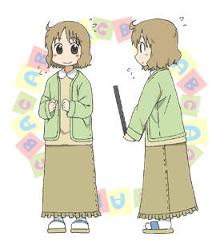

我们每天所经历的日常就是接连不断发生的奇迹
角色基本信息
- 姓名： 樱井泉
- 别名： 樱井老师
- 身份： 1年Q班的英语老师，担任辅导老师
- 配音： 小菅真美
- 登场作品： 漫画《日常》
- 性别： 女
- 发色： 棕黄发
- 瞳色： 棕黄瞳
- 年龄： 24岁
- 属性： 天然呆
- 类型： 教师(弱气)、洒水姬
- 弟弟： 樱井诚
身份背景
1年Q班的英文老师，担任辅导老师。
为了改变自己而接下辅导老师的工作。
小考时会用无法理解的图来考英文单词。
性格特征
留着短发，便装时有着双马尾，外貌很像小孩，似乎没有男朋友。(高中时代貌似是长发)
性格柔弱，常紧张到全身是汗（洒水姬）。
会因为学生的意外反应或者他人的强硬举措而惊慌失措，说不出话来。 真·软妹，被诚丢出房间的时候会在地板上弹跳一下。